LabVIEW VI Comparison Report
6/7/2026 1:41:20 AM
First VI: C:\wt\base-7d43bc8921f11fd29072b8b34913dd1281a881a8\Hardware Buzzer\Hardware Buzzer\Actor Core.viSecond VI: C:\wt\head-7d43bc8921f11fd29072b8b34913dd1281a881a8\Hardware Buzzer\Hardware Buzzer\Actor Core.vi
| Front Panel Overview | ||
|
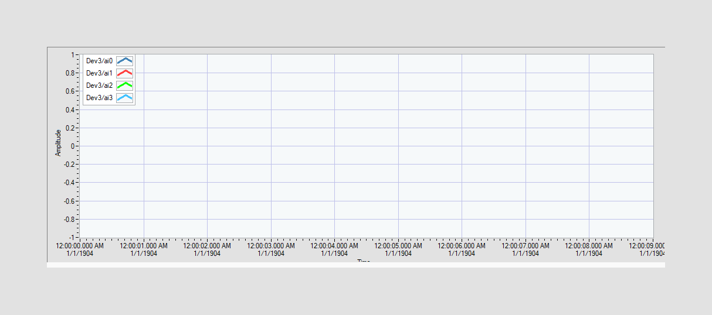 |

| |
| Block Diagram Overview | ||
|
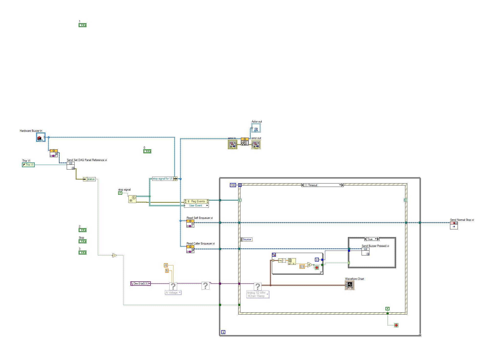 |

|
- Front Panel
- Front Panel Position/Size
- Block Diagram Functional
- Block Diagram Cosmetic
- VI Attribute
Detailed Information
1. Block Diagram objects
| C:\wt\base-7d43bc8921f11fd29072b8b34913dd1281a881a8\Hardware Buzzer\Hardware Buzzer\Actor Core.vi | C:\wt\head-7d43bc8921f11fd29072b8b34913dd1281a881a8\Hardware Buzzer\Hardware Buzzer\Actor Core.vi | |
|
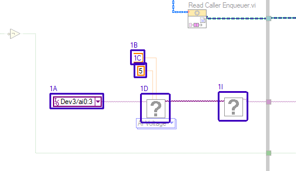 |
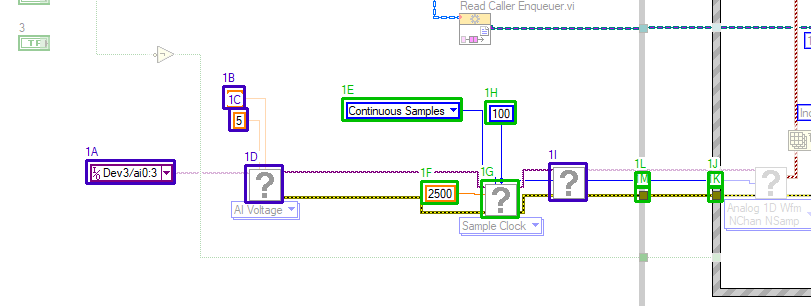 |
- DAQmx Physical Channel "physical channels" - moved : changed from "(169,1105)" to "(29,1108)"
- Numeric Constant "minimum value" - moved : changed from "(306,1031)" to "(166,1034)"
- Numeric Constant "maximum value" - moved : changed from "(312,1053)" to "(172,1056)"
- Poly VI "DAQmx Create Virtual Channel.vi" - moved : changed from "(328,1110)" to "(188,1113)"
- Ring Constant "sample mode" - added at (285,1046)
- Numeric Constant "rate" - added at (364,1129)
- Poly VI "DAQmx Timing.vi" - added at (424,1128)
- Numeric Constant "samples per channel" - added at (428,1049)
- SubVI "DAQmx Start Task.vi" - moved : changed from "(460,1107)" to "(492,1111)"
- Tunnel - added at (651,1120)
- Tunnel - added at (651,1135)
- Loop Tunnel - added at (578,1120)
- Loop Tunnel - added at (578,1135)
- wiring changes
2. Block Diagram objects
| C:\wt\base-7d43bc8921f11fd29072b8b34913dd1281a881a8\Hardware Buzzer\Hardware Buzzer\Actor Core.vi | C:\wt\head-7d43bc8921f11fd29072b8b34913dd1281a881a8\Hardware Buzzer\Hardware Buzzer\Actor Core.vi | |
|
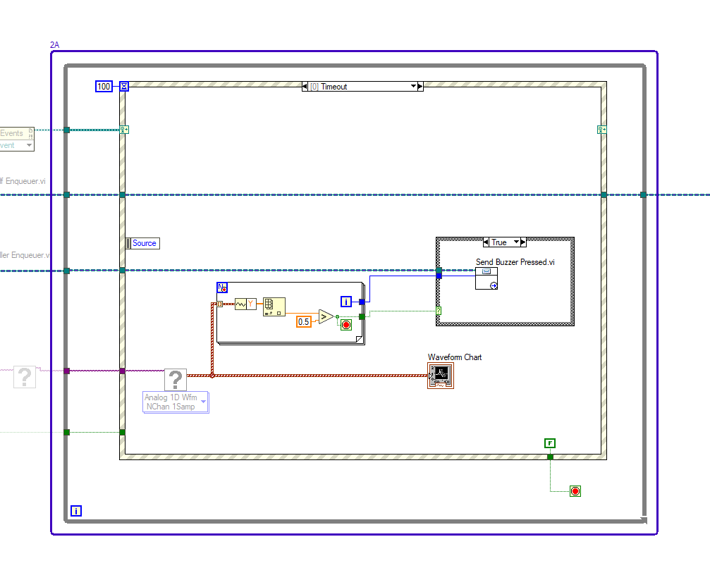 |

|
- While Loop - moved/resized : changed from "(531,678) 827*653" to "(578,678) 962*653"
3. Block Diagram objects
| C:\wt\base-7d43bc8921f11fd29072b8b34913dd1281a881a8\Hardware Buzzer\Hardware Buzzer\Actor Core.vi | C:\wt\head-7d43bc8921f11fd29072b8b34913dd1281a881a8\Hardware Buzzer\Hardware Buzzer\Actor Core.vi | |
|
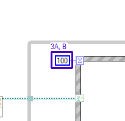 |
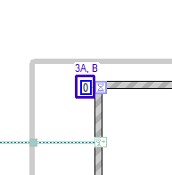 |
- Numeric Constant - data value : changed from "100" to "0"
- Numeric Constant - resized : changed from "25*17" to "13*17"
4. Block Diagram objects
| C:\wt\base-7d43bc8921f11fd29072b8b34913dd1281a881a8\Hardware Buzzer\Hardware Buzzer\Actor Core.vi | C:\wt\head-7d43bc8921f11fd29072b8b34913dd1281a881a8\Hardware Buzzer\Hardware Buzzer\Actor Core.vi | |
|
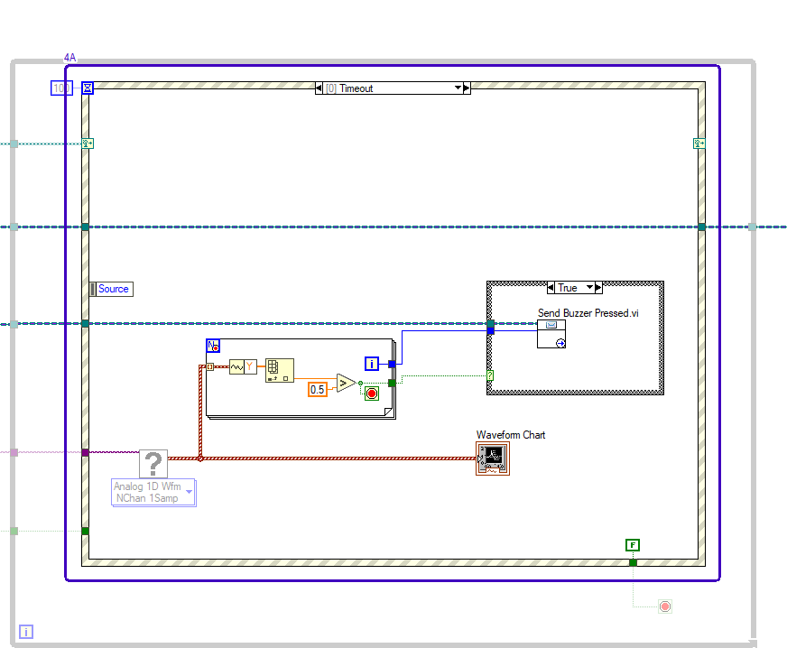 |
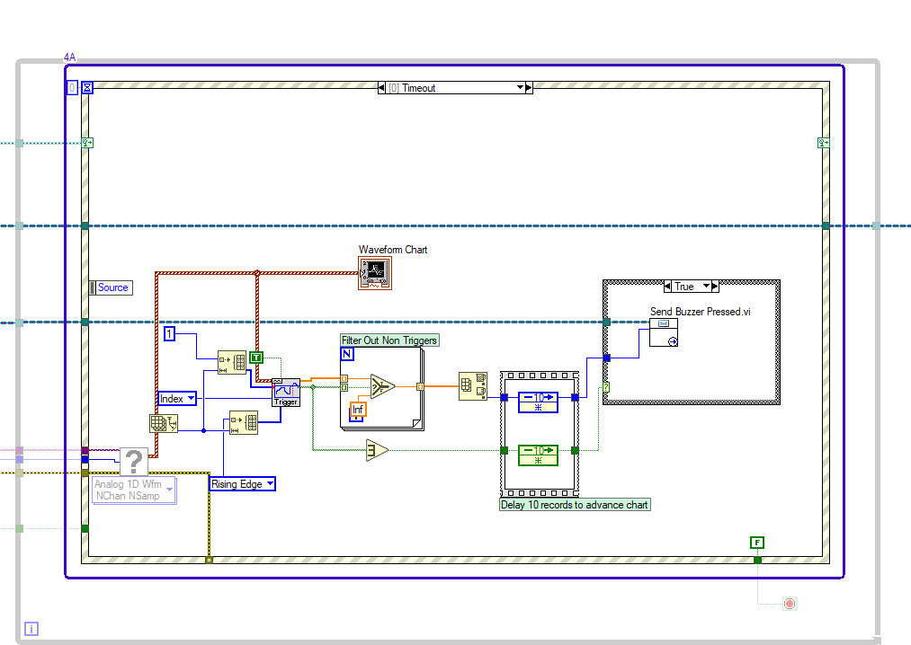 |
- Event Structure - moved/resized : changed from "(610,703) 692*538" to "(651,703) 833*538"
- For Loop - front/back order of objects
5. Block Diagram objects
| C:\wt\base-7d43bc8921f11fd29072b8b34913dd1281a881a8\Hardware Buzzer\Hardware Buzzer\Actor Core.vi | C:\wt\head-7d43bc8921f11fd29072b8b34913dd1281a881a8\Hardware Buzzer\Hardware Buzzer\Actor Core.vi | |
|
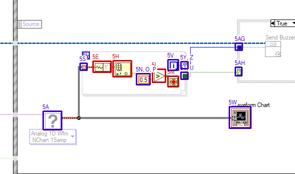 |
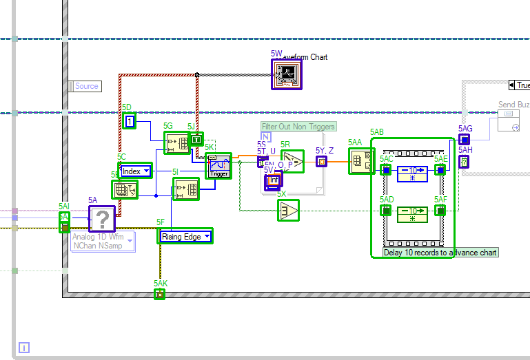 |
- Poly VI "DAQmx Read.vi" - moved : changed from "(674,1111)" to "(694,1111)"
- Array Size - added at (727,1074)
- Ring Constant "location mode" - added at (736,1048)
- Numeric Constant "samples per channel" - added at (743,976)
- Get Waveform Components - deleted at (774,1011)
- Ring Constant "trigger slope" - added at (793,1143)
- Initialize Array - added at (803,1003)
- Index Array - deleted at (814,1010)
- Initialize Array - added at (816,1070)
- Boolean Constant "reset" - added at (838,1004)
- Poly VI "NI_MAPro.lvlib:Trigger Detection for N Channel.vi" - added at (863,1034)
- Greater? - deleted at (893,1027)
- Loop Condition - deleted at (924,1041)
- Numeric Constant "f" - data type name : changed from "y" to "f"
- Numeric Constant "f" - data value : changed from "500.000E-3" to "Inf"
- Numeric Constant "f" - moved/resized : changed from "(861,1036) 22*17" to "(950,1060) 19*17"
- Name Label - moved : changed from "(875,1021)" to "(963,1045)"
- Select - added at (973,1030)
- Loop Tunnel - moved : changed from "(748,1015)" to "(939,1030)"
- Loop Tunnel - auto-indexing
- Loop Tunnel - moved : changed from "(950,1033)" to "(939,1040)"
- Loop Iteration - moved : changed from "(924,1008)" to "(949,1067)"
- Front Panel Terminal "Waveform Chart" - moved : changed from "(1047,1102)" to "(959,898)"
- Or Array Elements - added at (968,1102)
- Loop Tunnel - auto-indexing
- Loop Tunnel - moved : changed from "(950,1012)" to "(1024,1039)"
- Array Max & Min - added at (1071,1027)
- Flat Sequence Structure - added at (1117,1026)
- Sequence Tunnel - added at (1117,1051)
- Sequence Tunnel - added at (1117,1110)
- Sequence Tunnel - added at (1196,1051)
- Sequence Tunnel - added at (1196,1110)
- Tunnel - moved : changed from "(1059,975)" to "(1231,1007)"
- Case Selector - moved : changed from "(1059,1023)" to "(1231,1038)"
- Tunnel - added at (651,1120)
- Tunnel - added at (651,1135)
- Tunnel - added at (789,1232)
- wiring changes
6. Block Diagram objects
| C:\wt\base-7d43bc8921f11fd29072b8b34913dd1281a881a8\Hardware Buzzer\Hardware Buzzer\Actor Core.vi | C:\wt\head-7d43bc8921f11fd29072b8b34913dd1281a881a8\Hardware Buzzer\Hardware Buzzer\Actor Core.vi | |
|
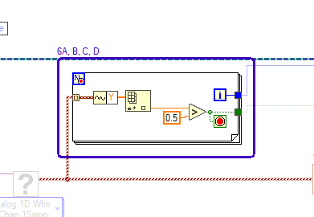 |
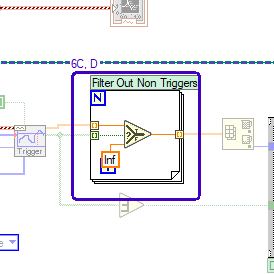 |
- Name Label - object name
- Name Label - label show/hide
- For Loop - auto grow enable/disable
- For Loop "Filter Out Non Triggers" - moved/resized : changed from "(748,988) 211*90" to "(939,999) 94*94"
- Loop Tunnel - front/back order of terminals
7. Block Diagram objects
| C:\wt\base-7d43bc8921f11fd29072b8b34913dd1281a881a8\Hardware Buzzer\Hardware Buzzer\Actor Core.vi | C:\wt\head-7d43bc8921f11fd29072b8b34913dd1281a881a8\Hardware Buzzer\Hardware Buzzer\Actor Core.vi | |
|
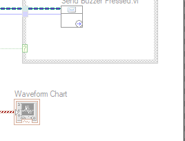 |
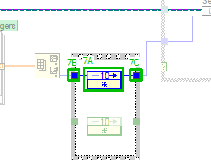 |
- Feedback Node "Feedback Node" - added at (1137,1049)
- Sequence Tunnel - added at (1117,1051)
- Sequence Tunnel - added at (1196,1051)
8. Block Diagram objects
| C:\wt\base-7d43bc8921f11fd29072b8b34913dd1281a881a8\Hardware Buzzer\Hardware Buzzer\Actor Core.vi | C:\wt\head-7d43bc8921f11fd29072b8b34913dd1281a881a8\Hardware Buzzer\Hardware Buzzer\Actor Core.vi | |
|
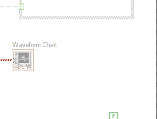 |
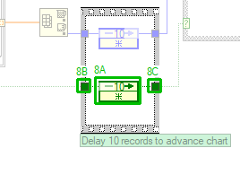 |
- Feedback Node "Feedback Node" - added at (1137,1108)
- Sequence Tunnel - added at (1117,1110)
- Sequence Tunnel - added at (1196,1110)
9. Block Diagram objects
| C:\wt\base-7d43bc8921f11fd29072b8b34913dd1281a881a8\Hardware Buzzer\Hardware Buzzer\Actor Core.vi | C:\wt\head-7d43bc8921f11fd29072b8b34913dd1281a881a8\Hardware Buzzer\Hardware Buzzer\Actor Core.vi | |
|
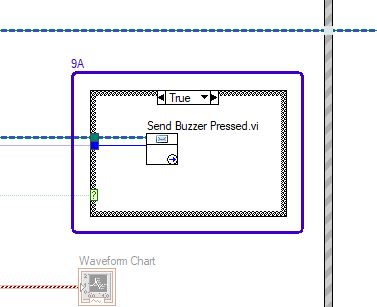 |
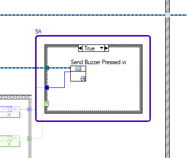 |
- Case Structure - moved/resized : changed from "(1059,924) 197*127" to "(1231,924) 198*140"
10. Block Diagram objects
| C:\wt\base-7d43bc8921f11fd29072b8b34913dd1281a881a8\Hardware Buzzer\Hardware Buzzer\Actor Core.vi | C:\wt\head-7d43bc8921f11fd29072b8b34913dd1281a881a8\Hardware Buzzer\Hardware Buzzer\Actor Core.vi | |
|
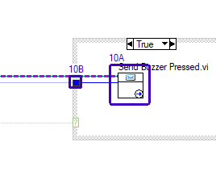 |
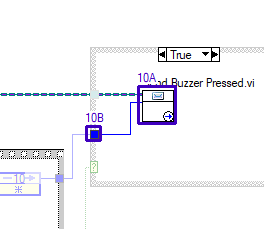 |
- SubVI "Controller.lvlib:Buzzer Pressed Msg.lvclass:Send Buzzer Pressed.vi" - moved : changed from "(1115,967)" to "(1283,967)"
- Tunnel - moved : changed from "(1059,975)" to "(1231,1007)"
11. Block Diagram objects
| C:\wt\base-7d43bc8921f11fd29072b8b34913dd1281a881a8\Hardware Buzzer\Hardware Buzzer\Actor Core.vi | C:\wt\head-7d43bc8921f11fd29072b8b34913dd1281a881a8\Hardware Buzzer\Hardware Buzzer\Actor Core.vi | |
|
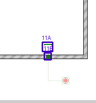 |
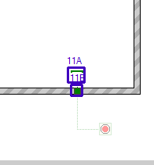 |
- Boolean Constant - moved : changed from "(1213,1210)" to "(1395,1210)"
- Tunnel - moved : changed from "(1217,1232)" to "(1399,1232)"
12. Block Diagram objects
| C:\wt\base-7d43bc8921f11fd29072b8b34913dd1281a881a8\Hardware Buzzer\Hardware Buzzer\Actor Core.vi | C:\wt\head-7d43bc8921f11fd29072b8b34913dd1281a881a8\Hardware Buzzer\Hardware Buzzer\Actor Core.vi | |
|
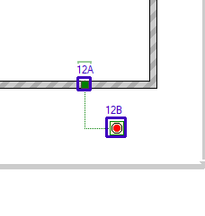 |
- Tunnel - moved : changed from "(1217,1232)" to "(1399,1232)"
- Loop Condition - moved : changed from "(1249,1277)" to "(1431,1277)"
13. Block Diagram objects
| C:\wt\base-7d43bc8921f11fd29072b8b34913dd1281a881a8\Hardware Buzzer\Hardware Buzzer\Actor Core.vi | C:\wt\head-7d43bc8921f11fd29072b8b34913dd1281a881a8\Hardware Buzzer\Hardware Buzzer\Actor Core.vi | |
|
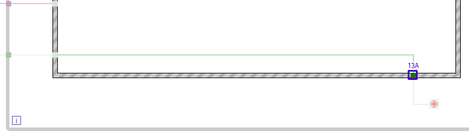 |
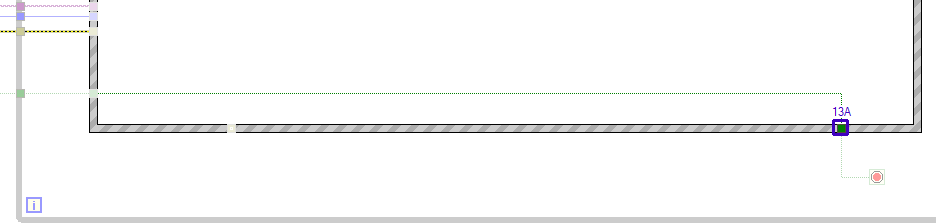 |
- Tunnel - moved : changed from "(1217,1232)" to "(1399,1232)"
14. Block Diagram objects
| C:\wt\base-7d43bc8921f11fd29072b8b34913dd1281a881a8\Hardware Buzzer\Hardware Buzzer\Actor Core.vi | C:\wt\head-7d43bc8921f11fd29072b8b34913dd1281a881a8\Hardware Buzzer\Hardware Buzzer\Actor Core.vi | |
|
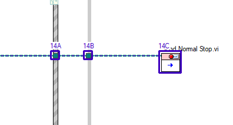 |
- Tunnel - moved : changed from "(1293,860)" to "(1475,860)"
- Loop Tunnel - moved : changed from "(1349,860)" to "(1531,860)"
- SubVI "Actor Framework.lvlib:Stop Msg.lvclass:Send Normal Stop.vi" - moved : changed from "(1477,860)" to "(1659,860)"
15. Block Diagram objects
| C:\wt\base-7d43bc8921f11fd29072b8b34913dd1281a881a8\Hardware Buzzer\Hardware Buzzer\Actor Core.vi | C:\wt\head-7d43bc8921f11fd29072b8b34913dd1281a881a8\Hardware Buzzer\Hardware Buzzer\Actor Core.vi | |
|
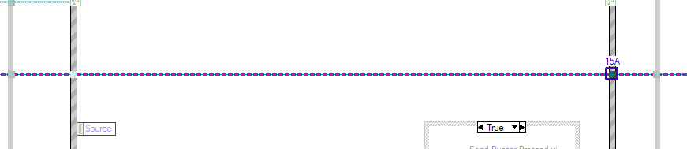 |
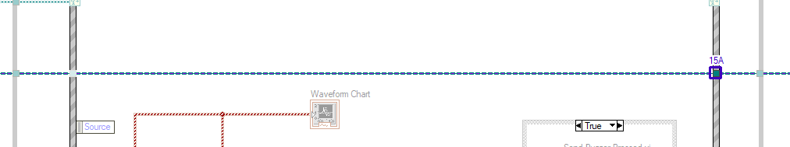 |
- Tunnel - moved : changed from "(1293,860)" to "(1475,860)"
16. Block Diagram objects
| C:\wt\base-7d43bc8921f11fd29072b8b34913dd1281a881a8\Hardware Buzzer\Hardware Buzzer\Actor Core.vi | C:\wt\head-7d43bc8921f11fd29072b8b34913dd1281a881a8\Hardware Buzzer\Hardware Buzzer\Actor Core.vi | |
|
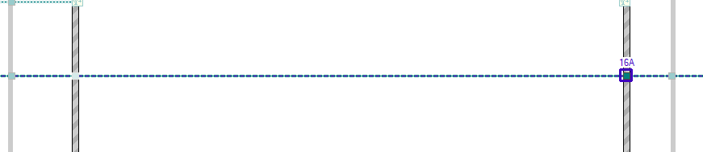 |
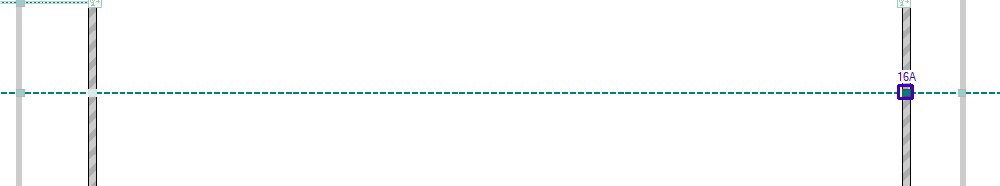 |
- Tunnel - moved : changed from "(1293,860)" to "(1475,860)"
17. Block Diagram objects
| C:\wt\base-7d43bc8921f11fd29072b8b34913dd1281a881a8\Hardware Buzzer\Hardware Buzzer\Actor Core.vi | C:\wt\head-7d43bc8921f11fd29072b8b34913dd1281a881a8\Hardware Buzzer\Hardware Buzzer\Actor Core.vi | |
|
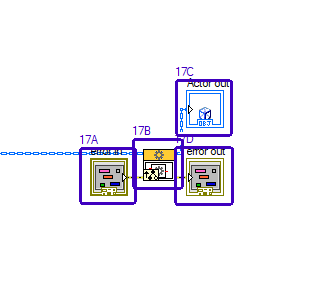 |

|
- Front Panel Terminal "error in" - moved : changed from "(568,525)" to "(615,525)"
- Call Parent Class Method "Actor Framework.lvlib:Actor.lvclass:Actor Core.vi" - moved : changed from "(621,516)" to "(668,516)"
- Front Panel Terminal "Actor out" - moved : changed from "(664,457)" to "(711,457)"
- Front Panel Terminal "error out" - moved : changed from "(664,525)" to "(711,525)"
18. Block Diagram - Diagram
| C:\wt\base-7d43bc8921f11fd29072b8b34913dd1281a881a8\Hardware Buzzer\Hardware Buzzer\Actor Core.vi | C:\wt\head-7d43bc8921f11fd29072b8b34913dd1281a881a8\Hardware Buzzer\Hardware Buzzer\Actor Core.vi | |
|
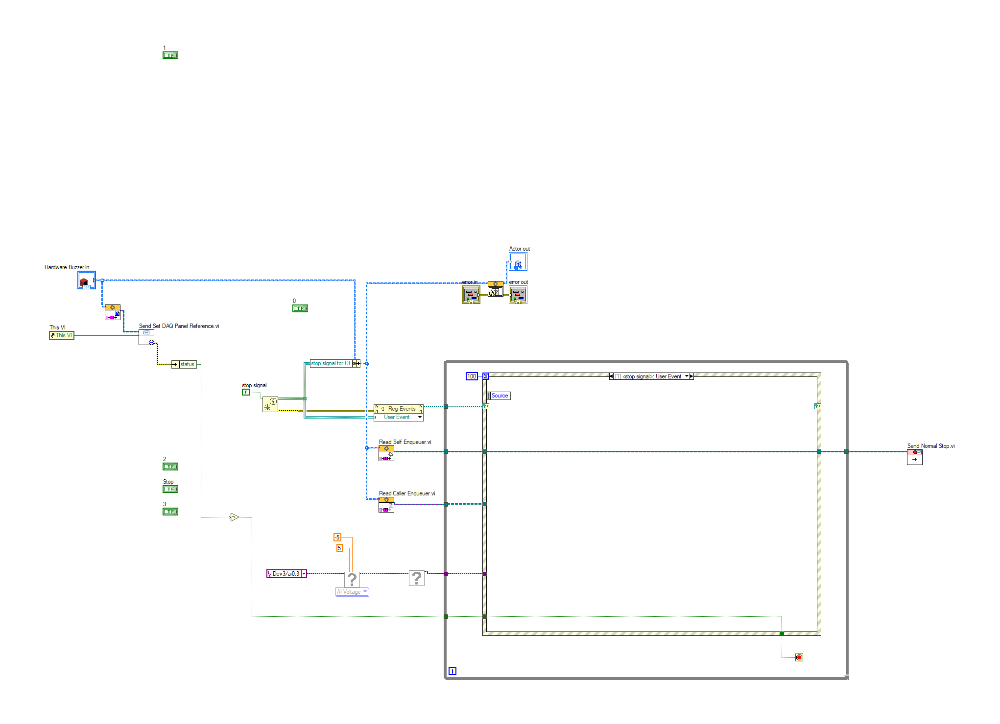 |
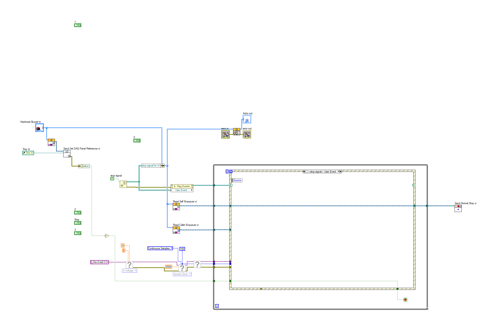 |
- SubVI - front/back order of objects
19. Front Panel - Waveform Chart
| C:\wt\base-7d43bc8921f11fd29072b8b34913dd1281a881a8\Hardware Buzzer\Hardware Buzzer\Actor Core.vi | C:\wt\head-7d43bc8921f11fd29072b8b34913dd1281a881a8\Hardware Buzzer\Hardware Buzzer\Actor Core.vi | |
|
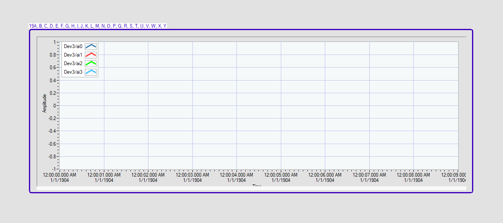 |
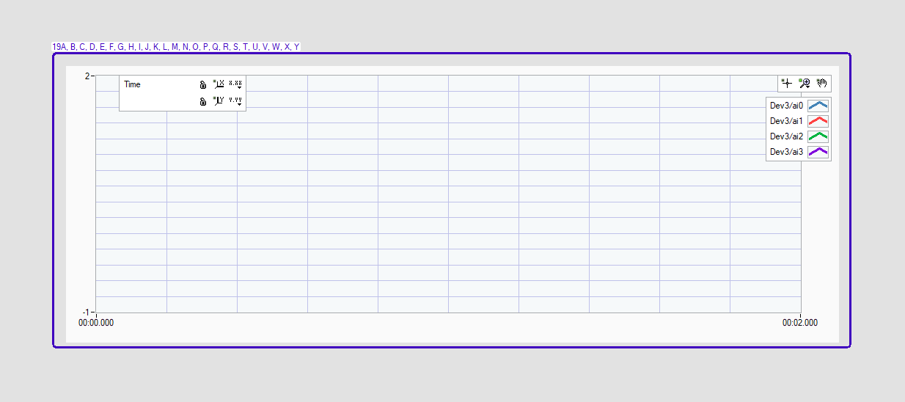 |
- Waveform Chart - history length
- Frame - color
- Scale Name - text value : changed from "Amplitude" to ""
- Scale Name - show/hide
- X Scale - format and precision
- X Scale - maximum value
- Scale Marker - wrapping enabled
- Scale Marker - background color
- Y Scale - maximum value
- Plot Area - moved/resized : changed from "(55,12) 980*315" to "(40,12) 963*325"
- Graph Scale-legend - show/hide
- Graph Scale-legend - scale names
- Graph Scale-legend - moved : changed from "(1054,48)" to "(72,12)"
- Cluster - moved : changed from "(1056,73)" to "(74,14)"
- Scale Name - show/hide
- Graph Plot Legend - anti-aliasing
- Graph Plot Legend - moved : changed from "(61,12)" to "(954,42)"
- Graph Plot Legend - plot colors
- Cluster - moved : changed from "(63,14)" to "(956,107)"
- Graph Palette - show/hide
- Graph Palette - graph tool (zoom, pan, cursor)
- Graph Palette - moved : changed from "(1054,12)" to "(970,12)"
- Graph Cursor Tool - show/hide
- Graph Zoom Tool - show/hide
- Graph Move Tool - show/hide